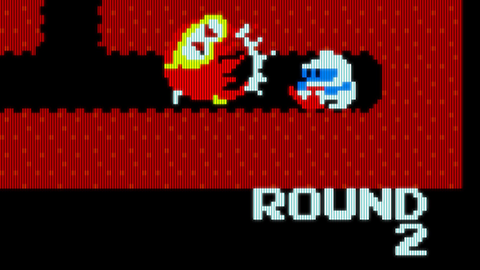
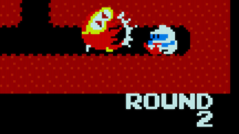

click for big dug ↑↑
Publishing Info
Published by: Atari, Inc.
Developed by: Namco Limited
Released: Apr, 1982
Description
Dig Dug is a 1-2 player arcade game in which you have to use your shovel to
dig your way through the earth.
Stopping you from doing this are two monsters,
called Pooka and Fygar, who will continually chase you around.
The only weapon
that you carry is an air pump, which you can use to inflate the monsters to the
point where they explode. [...]
Game Categories
Genre: Action
Perspective: Side view
Visual: Fixed
Gameplay: Arcade
Quote
This definitely goes under the heading of "Games That Were Made While a Programmer Was on Drugs," or at least had a good imagination.
And maybe they were into horror movies too. -- https://www.mobygames.com/mobyrank/source/sourceId,540/